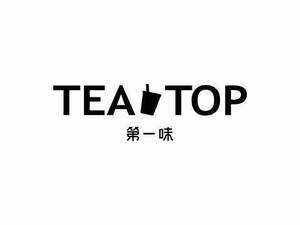

Trade Mark Journal No.2026/009 27 February 2026
UK00004222756 23 June 2025 (30,32,35,43)

- Class 30
- Tea; tea beverages; cocoa beverages with milk; golden syrup; honey; cocoa-based beverages; chocolate-based beverages; tea beverages with milk; fruit teas; iced tea; tea-based beverages with fruit flavoring; tea-based beverages; tea leaves; black tea [English tea]; oolong tea [Chinese tea]; Japanese green tea; cakes; cookies; candy; edible ices.
- Class 32
- Non-alcoholic beverages flavoured with tea; non-alcoholic fruit extracts; non-alcoholic fruit juice beverages; syrups for beverages; waters [beverages]; mineral water [beverages]; lemonades; non-alcoholic honey-based beverages; smoothies; non-alcoholic dried fruit beverages; fruit juices; non-alcoholic beverages flavoured with coffee; soft drinks; vegetable juices [beverages]; Fruit-based soft drinks flavored with tea; Fruit smoothies; Fruit beverages; Fruit-flavored beverages.
- Class 35
- Retail services in relation to non-alcoholic beverages; Retail services in relation to preparations for making beverages; Retail services in relation to teas; Retail services relating to food; Assistance in franchised commercial business management; Business assistance relating to the establishment of franchises; Import-export agency services; demonstration of goods; advertising; presentation of goods on communication media, for retail purposes; providing commercial information and advice for consumers in the choice of products and services; retail services relating to bakery products; online ordering services in the field of restaurant take-out and delivery.
- Class 43
- Serving of tea, coffee, cocoa, carbonated drinks or fruit juice beverages; Providing food and drink for guests; Takeaway food and drink services; Providing food and drink; Tea room services; Coffee shop services; Snack-bars; Restaurants; Rental of food service apparatus; food and drink catering; snack-bar services; rental of chairs, tables, table linen, glassware; information and advice in relation to the preparation of meals; take-away restaurant services; Rental of units for dispensing heated and chilled beverages, other than vending machines; Advisory services in relation to the preparation of meals.
Zhen Ding Ji Tea Co., Ltd.
Representative: TAICHUIP LTD